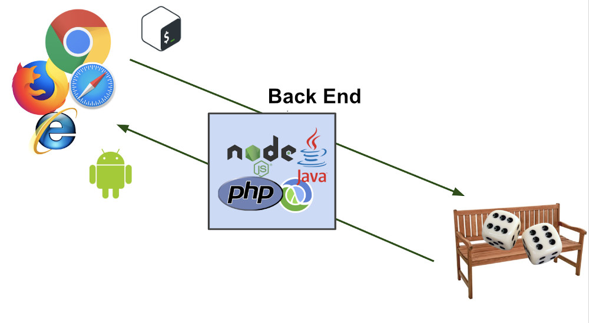

Back End, como o próprio nome sugere, vem da ideia do que tem por trás de uma aplicação. Pode ficar meio abstrato em um primeiro momento, mas pense que para conseguir usar o Facebook no dia a dia, os dados do seu perfil, amigos e publicações precisam estar salvos em algum lugar, sendo esse lugar um banco de dados e processados a partir de lá. Não basta apenas o front-end em HTML e CSS! O Back End trabalha em boa partes dos casos fazendo a ponte entre os dados que vem do navegador rumo ao banco de dados e vice-versa, sempre aplicando as devidas regras de negócio, validações e garantias em um ambiente onde o usuário final não tenha acesso e possa manipular algo.
Essa forma de desenvolvimento se relaciona com o que está por trás das aplicações desenvolvidas na programação. Ou seja, tudo que dá estrutura e apoio às ações do usuário da máquina é chamado de back-end.
Quando acessamos um site, por exemplo, por trás de toda sua apresentação amigável esteticamente, há uma comunicação das informações trocadas entre banco de dados e navegador. Portanto, por trás da interface gráfica do realizador, o back-end está sempre agindo.

Diferenças entre back-end e front-end
Enquanto os desenvolvimentos de front-end estão relacionados à área visual de aplicações, como design, forma da disposição de seções de texto e imagens, apresentação, linguagens HTML, CSS, cores e outros pontos; o desenvolvimento de back-end é tudo aquilo que possibilita o funcionamento.
Sendo assim, front-end e back-end estão bastante ligados, porém o segundo é voltado aos bancos de dados e servidores; responsável por atualizações, mudanças, segurança, gerenciamento de conteúdo, estrutura, etc. Se tomarmos o exemplo das redes sociais, seu funcionamento só é possível com um banco de dados que contenha informações como nome, data de nascimento, foto de perfil, e por aí vai.
É comum desenvolvedores Back End trabalharem com ferramentas de linha de comando, sites (deixando o HTML dinâmico), análise de dados (embora isso puxe mais o que um Data Scientist faz). Tudo isso pode ser feito com uma série de linguagens diferentes como: PHP, Ruby, Java, Clojure, C# entre diversas outras.
O que o back-end engloba em seu universo?
As vertentes da programação podem se enveredar por diferentes caminhos. Ou seja, um software developer pode trabalhar na área de front-end ou back-end. Quando seu domínio atinge os dois lados, sua denominação passa a ser Full Stack.
No caso do back-end, quais são os pontos que estão ligados com sua forma de programação? Confira:
Bancos de dados e servidores
Um servidor é o responsável por fornecer serviços aos computadores. Os bancos de dados, por sua vez, são como uma enorme fonte de informações, e é por meio deles que as aplicações se tornam dinâmicas.
Ao fazer uma pesquisa, o resultado é trazido de acordo com a busca no banco de dados. Podemos dizer então que esse centro de informações é acessado de maneira indireta, a partir de uma aplicação externa.
Segurança de dados
Em um momento que a transformação digital praticamente dita os processos dentro do mundo corporativo, dados são considerados um patrimônio de muito valor e são constantemente alvo de ataques.
Dessa maneira, ao programar em back-end, o desenvolvedor deve sempre seguir as melhores práticas, alinhadas a um padrão de segurança que seja confiável e resistente a invasões, principalmente referente a roubos de informações pessoais.
Linguagens de programação
O desenvolvimento da linguagem back-end passa por diversas etapas, desde o planejamento até a construção, a implantação e os cuidados com a manutenção da estrutura que suporta a aplicação.
Como o back-end é considerado o centro nervoso de qualquer site, suas tarefas podem até parecer menos palpável, uma vez que não se relacionam diretamente com a parte de design e jamais são vistas pelo usuário externo.
Portanto, é indicado conhecer linguagens de programação como Java, TypeScript, Node.js, PHP, Python, etc. Além disso, possíveis problemas devem ser antecipados e evitados antes mesmo que aconteçam.
APIs
A API é definida como uma interface que possibilita a comunicação entre sistemas com tecnologias distintas, por meio de uma linguagem que seja acessível a ambos os lados.
Dessa forma, as APIs conectam bancos de dados, aplicações, softwares e serviços. Consequentemente, isso exclui a necessidade de um formato de programação muito complexo.
Experiência e interface do usuário
Ao acessar um site, o usuário observa se ele é eficiente, intuitivo e fácil de ser utilizado. Sua experiência é extremamente importante para o bom desempenho das aplicações. Quando esse processo não encanta, a chance de alguém não retornar ao site é grande.
Quando falamos em plataformas de e-commerce, esse ponto é ainda mais delicado, pois o usuário quer pesquisar e fazer suas compras de maneira tranquila. Se requisitos básicos, como agilidade no carregamento, não forem atendidos, a insatisfação do cliente pode ser enorme.